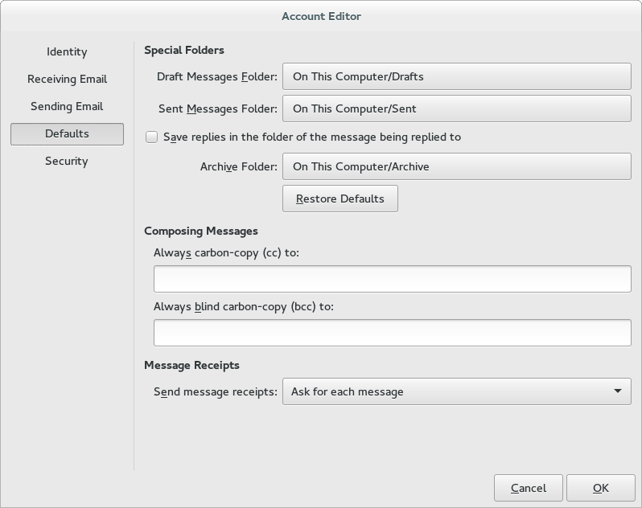
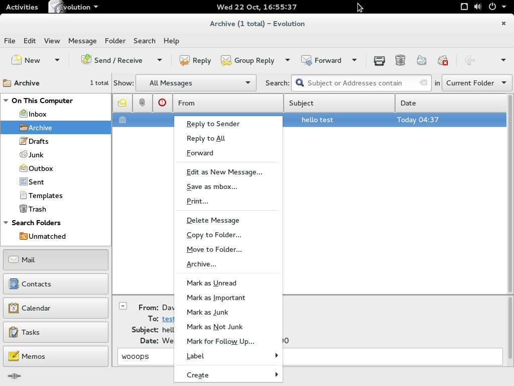

I’ve wanted a feature in Evolution for a while. It was formally requested in 2002, and it just recently got fixed in git master. I only started publicly groaning about this missing feature in 2013, and mcrha finally patched it. I tested the feature and found a small bug, mcrha patched that too, and I finally re-tested it. Now I’m blogging about this process so that you can get involved too!
Why Evolution?
I’d like to be able to select a bunch of messages and click an archive action to move them to a specific folder. Gmail popularized this idea in 2004, two years after it was proposed for Evolution. It has finally landed.
In your account editor, you can select the “Archive Folder” that you want messages moved to:
|  |
This will let you have a different folder set per account.
Archive like Gmail does:
If you use Evolution with a Gmail account, and you want the same functionality as the Gmail archive button, you can accomplish this by setting the Evolution archive folder to point to the Gmail “All Mail” folder, which will cause the Evolution archive action to behave as Gmail’s does.
To use this functionality (with or without Gmail), simply select the messages you want to move, and click the “Archive…” button:
|  |
This is also available via the “Message” menu. You can also activate with the Control-Alt-a shortcut. For more information, please read the description from mcrha.
GNOME Continuous:
Once the feature was patched in git master, I wanted to try it out right away! The easiest way for me to do this, was to use the GNOME Continuous project that walters started. This GNOME project automatically kicks off integration builds of multiple git master trees for the most common GNOME applications.
If you follow the Gnome Continuous instructions, it is fairly easy to download an image, and then import it with virt-manager or boxes. Once it had booted up, I logged into the machine, and was able to test Evolution’s git master.
Digging deep into the app:
If you want to tweak the app for debugging purposes, it is quite easy to do this with GTKInspector. Launch it with Control-Shift-i or Control-Shift-d, and you’ll soon be poking around the app’s internals. You can change the properties you want in real-time, and then you’ll know which corresponding changes in the upstream source are necessary.
Finding a bug and re-testing:
I did find one small bug with the Evolution patches. I’m glad I found it now, instead of having to wait six months for a new Fedora version. The maintainer fixed it quickly, and all that was left to do was to re-test the new git master. To do this, I updated my GNOME Continuous image.
passwd command.pkexec bash.ostree admin upgrade.Taking screenshots:
I took a few screenshots from inside the VM to show to you in this blog post. Extracting them was a bit trickier because I couldn’t get SSHD running. To do so, I installed the guestfs browser on my host OS. It was very straight forward to use it to read the VM image, browse to the ~/Pictures/ directory, and then download the images to my host. Thanks rwmjones!
Conclusion:
Hopefully this will motivate you to contribute to GNOME early and often! There are lots of great tools available, and lots of applications that need some love.
Happy Hacking,
James
You can hire James and his team at m9rx corporation.
You can follow James on Mastodon for more frequent updates and other random thoughts.
You can follow James on Twitter for more frequent updates and other random thoughts.
You can support James on GitHub if you'd like to help sustain this kind of content.
You can support James on Patreon if you'd like to help sustain this kind of content.
Your comment has been submitted and will be published if it gets approved.
Click here to see the patch you generated.
{kind=link}
{kind=link}
Comments
Nothing yet.
Post a comment